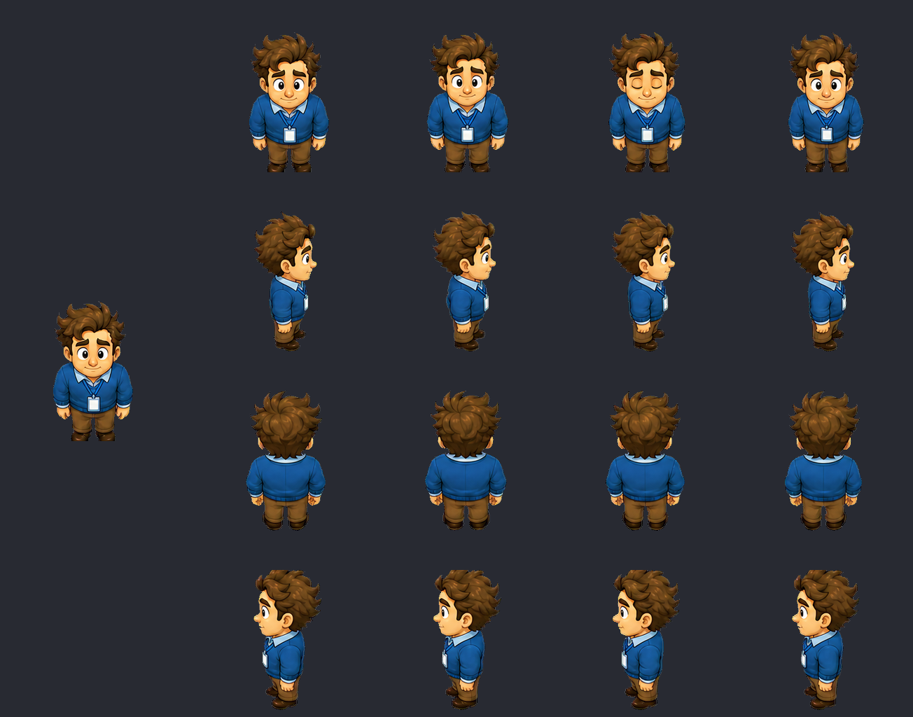
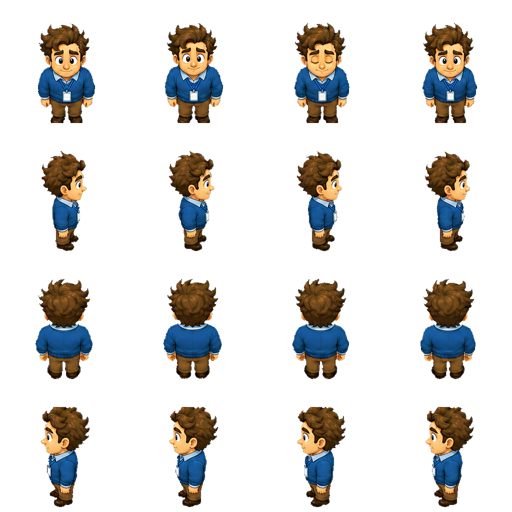
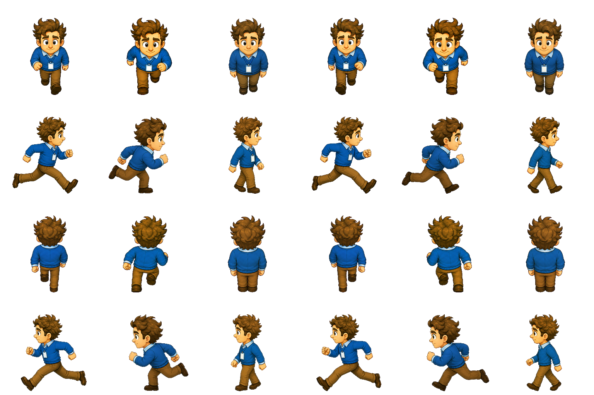
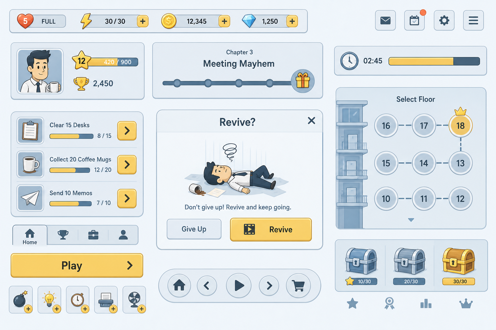
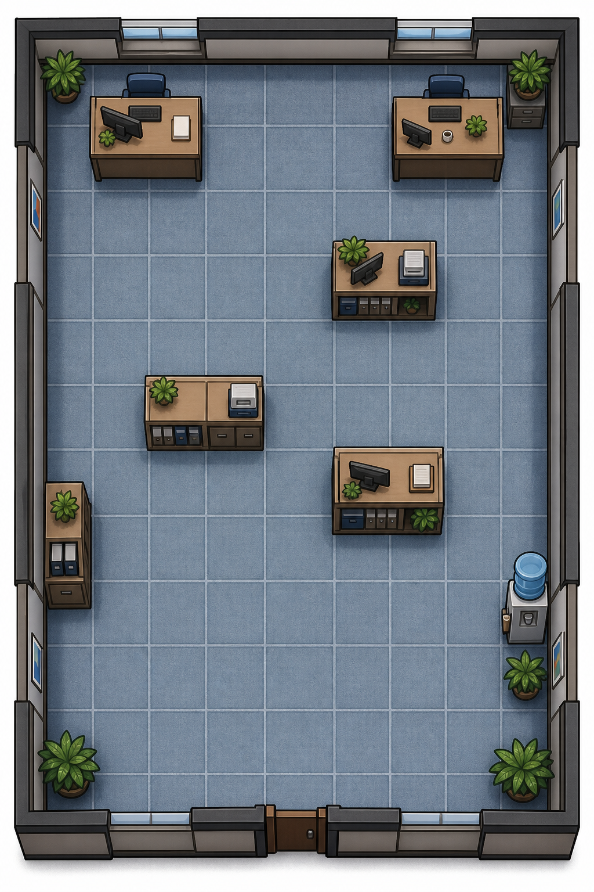

Работник месяца
Офисный grid dodge · 09:00→18:00 · Вирусный юмор / 18–45
Что смотреть
- Демка — сначала пощупай feel простыми фигурами
- Wireframe UI — сверка экранов (блоки без арта)
- Спрайты — инвентарь кадров (каталог + vibe refs)
- SFX — процедурные звуки + office_loop
- Классический GDD / LLM-спека — полный текст + оглавление (
REVIEW) - Референсы — новый vibe-set (key art, mood, герой, боссы)
- Промпты — атомарные задания под grid-canon
Правило
Пока статус не Подтверждён, папку src/ не создавать. CONFIRM только после playtest демки (F1→F2). См. docs/METHODOLOGY.md.
Файлы проекта
docs/STATUS.md— статус REVIEWdocs/DESIGN.md/DESIGN_LLM.mddocs/REFS.md·GAP_VS_CHAS_PIK.mdprompts/*.md·refs/**archive/2026-07-17-pre-feel-sync/— старый пакетmanagement/demos/— feel SoT
Feel / Beta — со спрайтами
Та же сетка и feel, но с RGBA-спрайтами из refs/sprites/. Если арт не подгрузился — fallback на фигуры.
serve-dashboard.bat (корень репо), открой /management/projects/deadline-escape.html.Офисная сетка 7×9, боссы с 4 краёв, день ≈60с. Статус арта: beta sheets.
Загрузка демки…
Wireframe UI — сверка
Режим Экраны — телефон с layout. Режим Компоненты UI — полный перечень кнопок/панелей/иконок без PNG.
Спрайты — Pipeline v1
Утверждение style-seed (кнопка APPROVED). Остальной арт в архиве. UI — Wireframe → Компоненты.
SFX — звуки
Процедурный Web Audio (без wav). Превью здесь; в Демке — SFX + office_loop.
Источник: games/deadline-escape/docs/DESIGN.md · оглавление слева → прыжок к разделу
Источник: games/deadline-escape/docs/ · полный текст + оглавление
Pipeline v1: активен только style-seed. Остальное — archive/2026-07-18-pipeline-v1-reset/. Индекс: docs/REFS.md.
art/style-seed-hero.png
art/style-seed-hero-board.png
sprites/char_hero_idle_sheet.png
sprites/char_hero_walk_sheet.png
ui/tone-ui.png
levels/layout-feel.pngИсточник: games/deadline-escape/prompts/ · старые в archive/2026-07-17-pre-feel-sync/
Статус дизайна
Готовность документов
Гейт разработки
Доступен только после статуса «Подтверждён».